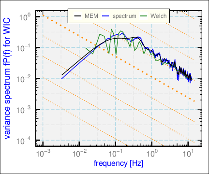
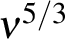
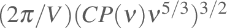
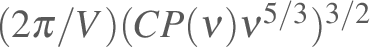

|
D <- getNetCDF('/Data/SOCRATES/SOCRATESrf08h.nc', Start=45600, End=50100) %>%
Rmutate(WIC2=WIC, WIC3=WIC) ## duplicate the variable
g <- VSpec(D, 'WIC', VLabel='spectrum')
g <- VSpec(D, 'WIC2', method='Welch', VLabel='Welch',
segLength=128, smoothBins=50, add=g)
VSpec(D, 'WIC3', method='MEM', VLabel='MEM', add=g) +
theme_WAC()
Figure:
Variance spectra for the same data shown in the preceding plot but generated by the three methods indicated in the legend.

|
Another option that may be of use, although the result is not a “proper”
spectrum in the sense used above, is to plot with weighting by 
and additional change of variables so that the resulting ordinate
matches the eddy dissipation rate in a case where the measurements
are indeed from an inertial subrange. Figure ![[*]](crossref.png) illustrates
this plot. The variable plotted is
,
with the airspeed and for lateral spectra; this quantity
should equal the eddy dissipation rate in an inertial subrange. illustrates
this plot. The variable plotted is
,
with the airspeed and for lateral spectra; this quantity
should equal the eddy dissipation rate in an inertial subrange.
|